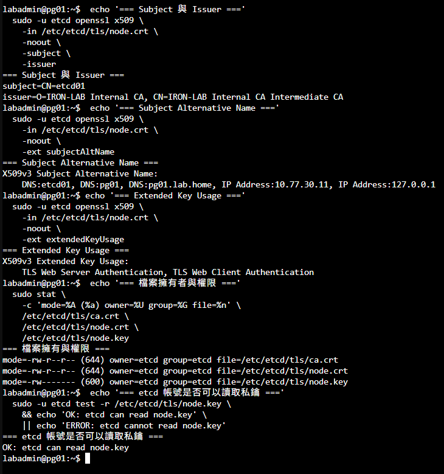
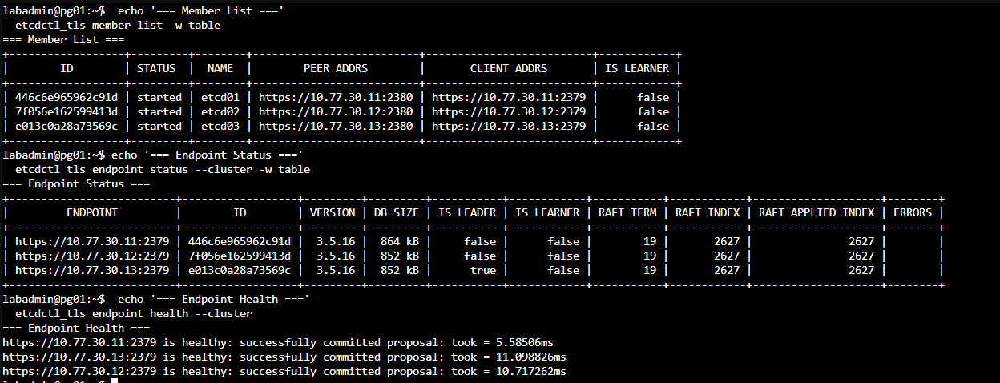
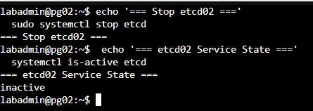
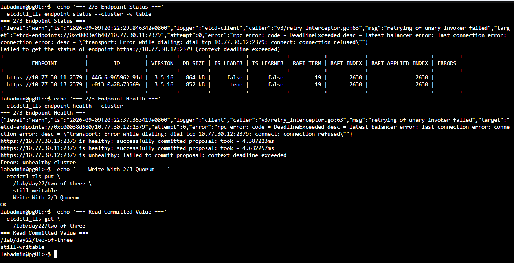
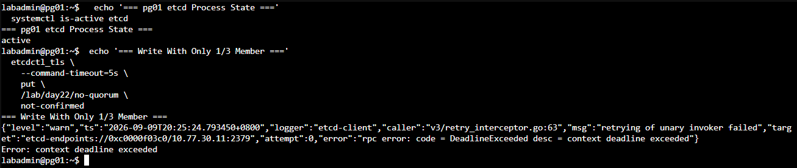
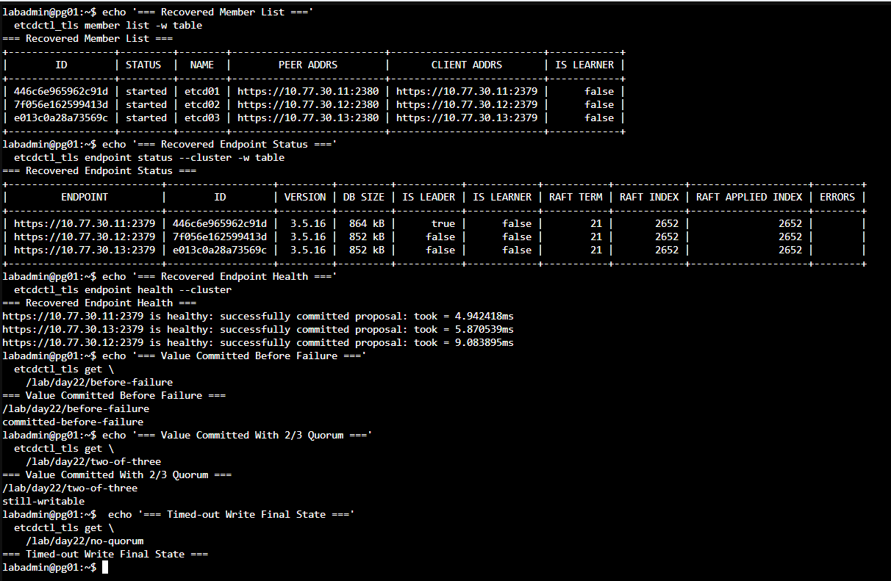
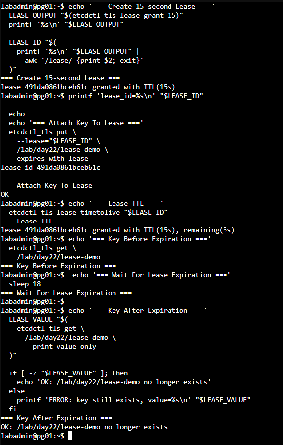

Day 22｜Patroni 如何讓 PostgreSQL 叢集取得一致決策？三節點 etcd、Raft 與 mTLS
對應文章：Day 22｜Patroni 如何讓 PostgreSQL 叢集取得一致決策？三節點 etcd、Raft 與 mTLS
etcd01～03 分別部署在 pg01～03，同一組 Database VLAN。Lab 可以演示 Quorum，容錯範圍則限於三台 VM，三者共用的 L0 Host 是共同故障域。
本日操作順序
- 逐台在 pg01、pg02、pg03 安裝 etcd，但先保持服務關閉。
- 在 ca01 建立獨立的 etcd Provisioner，不另外建立第二套 Root CA。
- 逐台在 pg01、pg02、pg03 本機產生 Private Key，向 ca01 申請自己的 etcd 憑證。
- 逐台寫入自己的 etcd Name、IP 與相同的 Initial Cluster 清單。
- 先啟動 pg01，再於短時間內啟動 pg02、pg03，建立第一個三成員 Cluster。
- 確認三台健康後，依序驗證 2／3、1／3 與恢復後的 Quorum 行為。
0. 開始前確認時間同步
操作節點：pg01、pg02、pg03。這裡只驗證 Day 20 已完成的 Chrony 基線。
三台逐台執行：
systemctl is-enabled chrony
systemctl is-active chrony
chronyc tracking
chronyc sources -v
三台都必須顯示 Chrony 為 enabled、active，Leap status 為 Normal，並且至少有一個以 ^* 開頭的同步來源。若尚未同步，先回到 Day 20 的時間同步步驟處理，再啟動 etcd。可比較的系統時間有助於判讀憑證有效期、租約觀察結果與跨節點紀錄；Quorum 則以 Raft 通訊與投票狀態為準。
1. 安裝套件
操作節點：pg01、pg02、pg03。逐台安裝，全部保持停止狀態。
依序在 pg01、pg02、pg03 執行：
sudo apt update
sudo apt install -y etcd-server etcd-client
etcd --version
etcdctl version
sudo systemctl disable --now etcd
2. 建立 etcd 節點憑證
操作順序：先到 ca01 建立 etcd 專用 Provisioner，再依序於 pg01、pg02、pg03 本機申請憑證。
Day 19 已建立 ca01 與共同信任的 Root CA，本日沿用這套 CA。PostgreSQL 與 etcd 使用不同 Provisioner，讓兩種服務擁有不同的簽發密碼與有效期範圍；兩者目前共用相同的 Intermediate CA。
2.1 在 ca01 建立 etcd Provisioner
使用 PVE Console 進入 ca01：
sudo install -m 600 -o step-ca -g step-ca /dev/null \
/etc/step-ca/etcd-provisioner-password
sudo -u step-ca nano /etc/step-ca/etcd-provisioner-password
輸入只供 iron-lab-etcd 使用的非空 Password，按 Ctrl+O、Enter、Ctrl+X。確認檔案非空但不要顯示內容：
sudo -u step-ca test -s /etc/step-ca/etcd-provisioner-password && \
echo 'etcd provisioner password file: non-empty'
建立 Provisioner：
sudo -u step-ca -H env STEPPATH=/var/lib/step-ca \
step ca provisioner add iron-lab-etcd \
--type JWK \
--create \
--password-file /etc/step-ca/etcd-provisioner-password \
--x509-min-dur 5m \
--x509-default-dur 2160h \
--x509-max-dur 8760h \
--ca-config /var/lib/step-ca/config/ca.json
sudo systemctl restart step-ca
sudo systemctl status step-ca --no-pager
sudo -u step-ca -H env STEPPATH=/var/lib/step-ca \
step ca provisioner list \
--ca-url https://ca01.lab.home:9000 \
--root /var/lib/step-ca/certs/root_ca.crt | \
grep -E '"(type|name|minTLSCertDuration|maxTLSCertDuration|defaultTLSCertDuration)"'
iron-lab-etcd 的 Provisioner Password 與 Day 19 使用的 iron-lab-admin 密碼分開保存，實際內容不得出現在畫面與 Git 中。
2.2 在三台節點準備 etcd TLS 目錄
操作節點：pg01、pg02、pg03。以下步驟三台都要做。
Day 20 已安裝 step-cli 並完成 ca01 Bootstrap，因此不需要重新安裝套件或再次接受 Fingerprint：
sudo install -d -m 750 -o etcd -g etcd /etc/etcd/tls
sudo install -m 644 -o etcd -g etcd \
/root/.step/certs/root_ca.crt /etc/etcd/tls/ca.crt
2.3 各節點在本機申請憑證
在 pg01 執行：
sudo step ca certificate etcd01 \
/etc/etcd/tls/node.crt \
/etc/etcd/tls/node.key \
--ca-url https://ca01.lab.home:9000 \
--root /etc/etcd/tls/ca.crt \
--provisioner iron-lab-etcd \
--not-after=2160h \
--san etcd01 \
--san pg01 \
--san pg01.lab.home \
--san 10.77.30.11 \
--san 127.0.0.1
在 pg02 執行：
sudo step ca certificate etcd02 \
/etc/etcd/tls/node.crt \
/etc/etcd/tls/node.key \
--ca-url https://ca01.lab.home:9000 \
--root /etc/etcd/tls/ca.crt \
--provisioner iron-lab-etcd \
--not-after=2160h \
--san etcd02 \
--san pg02 \
--san pg02.lab.home \
--san 10.77.30.12 \
--san 127.0.0.1
在 pg03 執行：
sudo step ca certificate etcd03 \
/etc/etcd/tls/node.crt \
/etc/etcd/tls/node.key \
--ca-url https://ca01.lab.home:9000 \
--root /etc/etcd/tls/ca.crt \
--provisioner iron-lab-etcd \
--not-after=2160h \
--san etcd03 \
--san pg03 \
--san pg03.lab.home \
--san 10.77.30.13 \
--san 127.0.0.1
每台的 node.key 都由 step 在本機建立，不經過 jump01，也不複製到另外兩台。簽發完成後，每台應有：
/etc/etcd/tls/ca.crt
/etc/etcd/tls/node.crt
/etc/etcd/tls/node.key
sudo chown -R etcd:etcd /etc/etcd/tls
sudo chmod 750 /etc/etcd/tls
sudo chmod 644 /etc/etcd/tls/ca.crt /etc/etcd/tls/node.crt
sudo chmod 600 /etc/etcd/tls/node.key
sudo -u etcd test -r /etc/etcd/tls/node.key
sudo -u etcd openssl x509 -in /etc/etcd/tls/node.crt -noout -subject -issuer -ext subjectAltName
sudo -u etcd openssl x509 -in /etc/etcd/tls/node.crt -noout -text | grep -A2 'Extended Key Usage'
sudo -u etcd openssl verify \
-show_chain \
-CAfile /etc/etcd/tls/ca.crt \
-untrusted /etc/etcd/tls/node.crt \
/etc/etcd/tls/node.crt
sudo -u etcd openssl x509 -checkend 2592000 -noout -in /etc/etcd/tls/node.crt
檢查結果必須包含 TLS Web Server Authentication 與 TLS Web Client Authentication，因為同一張憑證同時供 etcd Peer 與 Client Mutual TLS 使用。後續部署 Patroni 時會另外製作 Patroni 可讀的受限副本，並維持 /etc/etcd/tls/node.key 的權限。

圖（一）pg01 的 etcd 憑證包含節點名稱、IP、伺服器與用戶端驗證用途，私鑰則只允許 etcd 服務帳號讀取。
正式環境若需要更清楚的責任分離，應由 Offline Root CA 分別簽發 PostgreSQL 與 etcd 的 Intermediate CA，再把 Online Intermediate CA 部署在獨立 PKI VLAN 的 Unprivileged LXC、專用 VM 或既有 PKI 平台。
3. 固定 Initial Cluster
操作節點：pg01、pg02、pg03。每台設定自己的 Name 與 IP，但三台的 Initial Cluster 成員清單必須完全一致。
Initial Cluster 是第一次建立 etcd Cluster 時使用的成員名冊。等號左側是 Member Name，右側是其他 Member 用來連線的 Peer URL：
etcd01=https://10.77.30.11:2380,etcd02=https://10.77.30.12:2380,etcd03=https://10.77.30.13:2380
三台的 ETCD_INITIAL_CLUSTER 必須逐字一致，但每台的 ETCD_NAME、Listen URL 與 Advertise URL 必須對應自己的 IP。以下 Port 不可互換：
- TCP 2379 是 Client Port，提供
etcdctl與後續 Patroni 使用。 - TCP 2380 是 Peer Port，供 etcd01～03 彼此交換 Raft 訊息。
LISTEN決定本機在哪些 Address Bind Socket。ADVERTISE是本節點告訴其他 Client 或 Member「請使用這個位址連我」，因此必須填入其他節點可到達的固定 IP。INITIAL_CLUSTER_TOKEN用來區分不同 Cluster Bootstrap；三台必須相同。INITIAL_CLUSTER_STATE="new"只表示這是第一次建立這組 Cluster。成功啟動後，Member Identity 會保存在 Data Directory，日常 Restart 不會重新 Bootstrap。
3.1 在 pg01 寫入 etcd01 設定
操作位置：pg01 Console。
sudo cp -a /etc/default/etcd /etc/default/etcd.before-day22 2>/dev/null || true
sudo nano /etc/default/etcd
清除檔案內會與下列變數重複的舊設定，再填入：
ETCD_NAME="etcd01"
ETCD_DATA_DIR="/var/lib/etcd/iron-pg"
ETCD_LISTEN_PEER_URLS="https://10.77.30.11:2380"
ETCD_INITIAL_ADVERTISE_PEER_URLS="https://10.77.30.11:2380"
ETCD_LISTEN_CLIENT_URLS="https://10.77.30.11:2379,https://127.0.0.1:2379"
ETCD_ADVERTISE_CLIENT_URLS="https://10.77.30.11:2379"
ETCD_INITIAL_CLUSTER="etcd01=https://10.77.30.11:2380,etcd02=https://10.77.30.12:2380,etcd03=https://10.77.30.13:2380"
ETCD_INITIAL_CLUSTER_STATE="new"
ETCD_INITIAL_CLUSTER_TOKEN="iron-pg-etcd-v1"
ETCD_CERT_FILE="/etc/etcd/tls/node.crt"
ETCD_KEY_FILE="/etc/etcd/tls/node.key"
ETCD_TRUSTED_CA_FILE="/etc/etcd/tls/ca.crt"
ETCD_CLIENT_CERT_AUTH="true"
ETCD_PEER_CERT_FILE="/etc/etcd/tls/node.crt"
ETCD_PEER_KEY_FILE="/etc/etcd/tls/node.key"
ETCD_PEER_TRUSTED_CA_FILE="/etc/etcd/tls/ca.crt"
ETCD_PEER_CLIENT_CERT_AUTH="true"
按 Ctrl+O、Enter、Ctrl+X，但先不要啟動 etcd。
3.2 在 pg02 寫入 etcd02 設定
操作位置：pg02 Console。
sudo cp -a /etc/default/etcd /etc/default/etcd.before-day22 2>/dev/null || true
sudo nano /etc/default/etcd
清除重複的舊設定，再填入完整內容：
ETCD_NAME="etcd02"
ETCD_DATA_DIR="/var/lib/etcd/iron-pg"
ETCD_LISTEN_PEER_URLS="https://10.77.30.12:2380"
ETCD_INITIAL_ADVERTISE_PEER_URLS="https://10.77.30.12:2380"
ETCD_LISTEN_CLIENT_URLS="https://10.77.30.12:2379,https://127.0.0.1:2379"
ETCD_ADVERTISE_CLIENT_URLS="https://10.77.30.12:2379"
ETCD_INITIAL_CLUSTER="etcd01=https://10.77.30.11:2380,etcd02=https://10.77.30.12:2380,etcd03=https://10.77.30.13:2380"
ETCD_INITIAL_CLUSTER_STATE="new"
ETCD_INITIAL_CLUSTER_TOKEN="iron-pg-etcd-v1"
ETCD_CERT_FILE="/etc/etcd/tls/node.crt"
ETCD_KEY_FILE="/etc/etcd/tls/node.key"
ETCD_TRUSTED_CA_FILE="/etc/etcd/tls/ca.crt"
ETCD_CLIENT_CERT_AUTH="true"
ETCD_PEER_CERT_FILE="/etc/etcd/tls/node.crt"
ETCD_PEER_KEY_FILE="/etc/etcd/tls/node.key"
ETCD_PEER_TRUSTED_CA_FILE="/etc/etcd/tls/ca.crt"
ETCD_PEER_CLIENT_CERT_AUTH="true"
按 Ctrl+O、Enter、Ctrl+X，先不要啟動 etcd。
3.3 在 pg03 寫入 etcd03 設定
操作位置：pg03 Console。
sudo cp -a /etc/default/etcd /etc/default/etcd.before-day22 2>/dev/null || true
sudo nano /etc/default/etcd
清除重複的舊設定，再填入完整內容：
ETCD_NAME="etcd03"
ETCD_DATA_DIR="/var/lib/etcd/iron-pg"
ETCD_LISTEN_PEER_URLS="https://10.77.30.13:2380"
ETCD_INITIAL_ADVERTISE_PEER_URLS="https://10.77.30.13:2380"
ETCD_LISTEN_CLIENT_URLS="https://10.77.30.13:2379,https://127.0.0.1:2379"
ETCD_ADVERTISE_CLIENT_URLS="https://10.77.30.13:2379"
ETCD_INITIAL_CLUSTER="etcd01=https://10.77.30.11:2380,etcd02=https://10.77.30.12:2380,etcd03=https://10.77.30.13:2380"
ETCD_INITIAL_CLUSTER_STATE="new"
ETCD_INITIAL_CLUSTER_TOKEN="iron-pg-etcd-v1"
ETCD_CERT_FILE="/etc/etcd/tls/node.crt"
ETCD_KEY_FILE="/etc/etcd/tls/node.key"
ETCD_TRUSTED_CA_FILE="/etc/etcd/tls/ca.crt"
ETCD_CLIENT_CERT_AUTH="true"
ETCD_PEER_CERT_FILE="/etc/etcd/tls/node.crt"
ETCD_PEER_KEY_FILE="/etc/etcd/tls/node.key"
ETCD_PEER_TRUSTED_CA_FILE="/etc/etcd/tls/ca.crt"
ETCD_PEER_CLIENT_CERT_AUTH="true"
按 Ctrl+O、Enter、Ctrl+X，先不要啟動 etcd。
3.4 啟動前逐台核對
操作位置：依序在 pg01、pg02、pg03 執行。本節只核對設定，完成後再啟動 etcd。
先確認 systemd Service 會讀取 /etc/default/etcd：
sudo systemctl cat etcd | grep -E 'EnvironmentFile|ExecStart'
確認本機 IP、etcd Name、URL、共同成員清單與 TLS File：
ip -4 -br address
sudo grep -E '^ETCD_(NAME|DATA_DIR|LISTEN|ADVERTISE|INITIAL|CERT|KEY|TRUSTED|CLIENT|PEER)' \
/etc/default/etcd
sudo -u etcd test -r /etc/etcd/tls/ca.crt && echo 'CA readable'
sudo -u etcd test -r /etc/etcd/tls/node.crt && echo 'certificate readable'
sudo -u etcd test -r /etc/etcd/tls/node.key && echo 'key readable'
sudo ss -lntp | grep -E ':(2379|2380) ' || true
核對結果：
- pg01 只能使用
ETCD_NAME="etcd01"與本機 IP10.77.30.11。 - pg02 只能使用
ETCD_NAME="etcd02"與本機 IP10.77.30.12。 - pg03 只能使用
ETCD_NAME="etcd03"與本機 IP10.77.30.13。 - 三台的
ETCD_INITIAL_CLUSTER、ETCD_INITIAL_CLUSTER_TOKEN與 TLS Path 必須完全相同。 - 啟動前 TCP 2379、2380 不應被其他 Process 占用。
- 三個 TLS Readable Check 都必須出現。
最後逐台檢查 Certificate SAN。pg01 應看到 etcd01／10.77.30.11，pg02 應看到 etcd02／10.77.30.12，pg03 應看到 etcd03／10.77.30.13：
sudo -u etcd openssl x509 \
-in /etc/etcd/tls/node.crt \
-noout -subject -ext subjectAltName
Name、IP、Initial Cluster 字串與 SAN 全部正確後再進入第 4 節。pg02、pg03 的 Certificate 必須分別使用 etcd02、etcd03 的 SAN。
4. 第一次啟動
操作順序：先 pg01，再於短時間內依序啟動 pg02、pg03。完成前不要離開去做其他設定。
先在三台各自建立全新的 Data Directory，但只 Enable Service，不要立刻 Start：
sudo install -d -m 700 -o etcd -g etcd /var/lib/etcd/iron-pg
sudo find /var/lib/etcd/iron-pg -mindepth 1 -maxdepth 2 -print
sudo systemctl enable etcd
find 不應輸出任何項目。第一次 Bootstrap 需要三票中的至少兩票才能選出 Leader，單獨執行第一台的 systemctl start 可能會等待其他 Member，甚至等到 systemd Timeout。因此先開好三台 Console，再依序執行非阻塞啟動：
在 pg01：
sudo systemctl --no-block start etcd
接著立刻在 pg02：
sudo systemctl --no-block start etcd
最後立刻在 pg03：
sudo systemctl --no-block start etcd
等待數秒後，依序在三台檢查：
sudo systemctl status etcd -l --no-pager
sudo journalctl -u etcd -b -n 30 -o cat --no-pager
sudo ss -lntp | grep -E ':(2379|2380) '
三台都應為 active (running)，並監聽自己的 TCP 2379、2380。如果出現 couldn't find local name，代表 ETCD_NAME 沒有出現在 /etc/default/etcd，或沒有與 ETCD_INITIAL_CLUSTER 左側名稱一致。
第一次啟動只要失敗，/var/lib/etcd/iron-pg 就可能已留下不完整的 Member Data。先停止三台並保存失敗目錄，不要直接帶著部分資料重試：
sudo systemctl stop etcd
if [ -e /var/lib/etcd/iron-pg.failed-before-cluster ]; then
echo '停止：失敗目錄備份已存在，請先確認內容'
else
sudo mv /var/lib/etcd/iron-pg /var/lib/etcd/iron-pg.failed-before-cluster
sudo install -d -m 700 -o etcd -g etcd /var/lib/etcd/iron-pg
fi
若顯示停止訊息，不要覆蓋既有備份。三台設定修正完成後，再重新按照 pg01 → pg02 → pg03 的非阻塞順序啟動。Cluster 健康以前不要刪除保存的失敗目錄。
5. 使用 etcdctl 驗證 Cluster
操作節點：先在 pg01 設定並驗證。需要從其他節點管理時，再於 pg02、pg03 重複。
node.crt 與 node.key 刻意只允許 etcd Service Account 讀取，因此直接以 labadmin 執行會出現 permission denied。也不要先 export ETCDCTL_* 再執行 sudo etcdctl；sudo 預設會清除這些環境變數，etcdctl 將退回未加密的 http://127.0.0.1:2379，接著得到 error reading server preface: EOF，etcd Log 也會出現 first record does not look like a TLS handshake。
在 pg01 的目前 Bash Session 建立一個暫時 Function，讓每次操作都明確以 etcd 身分帶入相同的 HTTPS Endpoint 與 Client Certificate：
etcdctl_tls() {
sudo -u etcd env \
ETCDCTL_API=3 \
ETCDCTL_ENDPOINTS='https://10.77.30.11:2379,https://10.77.30.12:2379,https://10.77.30.13:2379' \
ETCDCTL_CACERT='/etc/etcd/tls/ca.crt' \
ETCDCTL_CERT='/etc/etcd/tls/node.crt' \
ETCDCTL_KEY='/etc/etcd/tls/node.key' \
etcdctl "$@"
}
etcdctl_tls member list -w table
etcdctl_tls endpoint status --cluster -w table
etcdctl_tls endpoint health --cluster
這個 Function 只存在於目前的 Terminal Session，不會寫入系統設定，也不會放寬 Private Key 權限。若關閉 Terminal 或重新登入，先重新執行上面的 Function 定義，再繼續本日實驗。
6. Quorum 實驗
操作順序：準備三個 Console，先完成單一 Member 故障並恢復 3/3 Healthy，接著才演示失去 Quorum。
6.1 準備三個 Console 並記錄初始狀態
- 開啟 pg01 Console，保留第 5 節已定義
etcdctl_tls的 Bash Session。後續叢集查詢與測試 Key 都在這個 Console 執行。 - 另外開啟 pg02、pg03 Console，這兩個 Console 只負責停止、啟動與查看本機 etcd。
- 在 pg01 確認三個 Member 與 Endpoint：
etcdctl_tls member list -w table
etcdctl_tls endpoint status --cluster -w table
etcdctl_tls endpoint health --cluster
member list應列出 etcd01、etcd02、etcd03。endpoint status應有三列，而且只有一列的IS LEADER是true。- 記下 Leader 所在的 Endpoint。
10.77.30.11是 pg01、.12是 pg02、.13是 pg03。 - 三列都 Healthy 才能開始。若初始狀態已缺少 Member，不要繼續製造第二個故障。

圖（二）三個成員均已啟動，三個端點可以提交提案，且當下只有 etcd03 為 Raft 領導者。
6.2 停止一個非 Leader Member
- 優先選 pg03 作為停止對象。若 pg03 是 Leader，就改選 pg02；本節先停止非 Leader，避免同時混入 Leader Election 的畫面。
- 到選定節點的 Console。例如選擇 pg03 時執行：
sudo systemctl stop etcd
systemctl is-active etcd
- 預期
systemctl is-active顯示inactive。不要關閉整台 VM，也不要刪除/var/lib/etcd/iron-pg。

圖（三）停止一個非領導者成員後，該節點的 etcd 服務顯示為 inactive。
4. 回到 pg01 執行：
etcdctl_tls endpoint status --cluster -w table
etcdctl_tls endpoint health --cluster
- 被停止的 Endpoint 應顯示 Unhealthy、Timeout 或無法連線，其餘兩個 Endpoint 為 Healthy。三節點叢集保有 2 票與 Quorum。
- 在 pg01 寫入並讀回測試 Key，證明 2／3 狀態可完成一致寫入：
etcdctl_tls put /lab/day22/status healthy
etcdctl_tls get /lab/day22/status
put應回傳OK，get應顯示 Key 與healthy。- 回到剛才停止的節點。例如 pg03 執行：
sudo systemctl start etcd
systemctl is-active etcd
sudo journalctl -u etcd -b -n 20 -o cat --no-pager
- 預期服務回到
active。回到 pg01 重複執行：
etcdctl_tls endpoint health --cluster
etcdctl_tls endpoint status --cluster -w table
- 等三台全部 Healthy，再進行下一節。如果剛啟動時尚未恢復，可以等待數秒後重查，不要重建 Member 或清空 Data Directory。
6.3 保留 pg01，停止 pg03
- 在 pg01 再次確認 3/3 Healthy，並清除上次可能留下的測試 Key：
etcdctl_tls endpoint health --cluster
etcdctl_tls del /lab/day22/no-quorum
- 到 pg03 Console 執行：
sudo systemctl stop etcd
systemctl is-active etcd
- 回到 pg01。此時 pg01、pg02 還有 2 票，應可正常讀寫：
etcdctl_tls put /lab/day22/two-of-three still-writable
etcdctl_tls get /lab/day22/two-of-three
etcdctl_tls endpoint health --cluster
put應回傳OK，證明停止一台後保有 Quorum。pg03 顯示 Unhealthy 是本節預期結果。

圖（四）叢集保有 2／3 法定票數，可以提交並讀回 /lab/day22/two-of-three。
6.4 再停止 pg02，實際失去 Quorum
- 保持 pg03 停止，到 pg02 Console 執行：
sudo systemctl stop etcd
systemctl is-active etcd
- 確認 pg02 顯示
inactive。此時只剩 pg01 的 1 票，不足三節點叢集需要的 2 票。 - 回到 pg01，先確認 etcd Process 的執行狀態：
systemctl is-active etcd
- 結果可能是
active。這只代表 Process 存活，叢集是否能提交寫入要由下一步確認。 - 在 pg01 嘗試寫入新的 Key，將 Client Timeout 限制為 5 秒，避免命令長時間等待：
etcdctl_tls --command-timeout=5s \
put /lab/day22/no-quorum not-confirmed
- 預期得到
context deadline exceeded或類似 Timeout。這證明目前無法取得多數票完成一致寫入。 - 不要在 1/3 狀態執行
force-new-cluster、修改 Membership、刪除 Data Directory，或把剩下的 pg01 當成新的單節點 Cluster。 - Client Timeout 只表示呼叫端沒有得到明確結果。恢復 Quorum 後重新讀取 Key，Application 再依最終狀態決定是否需要重試。

圖（五）只剩 1／3 成員時，pg01 的 etcd 程序維持 active，新的 put 則因無法取得多數確認而逾時。
6.5 依序恢復 pg02、pg03
- 先到 pg02 Console 恢復第二票：
sudo systemctl start etcd
systemctl is-active etcd
sudo journalctl -u etcd -b -n 20 -o cat --no-pager
- 確認 pg02 為
active，回到 pg01 執行：
etcdctl_tls endpoint health --cluster
etcdctl_tls get /lab/day22/status
etcdctl_tls get /lab/day22/two-of-three
etcdctl_tls get /lab/day22/no-quorum
- pg01、pg02 應恢復 Healthy，
status與two-of-three應可讀回。記錄no-quorum是否存在，並以這次查詢結果判定先前逾時寫入的最終狀態。 - 到 pg03 Console 恢復第三個 Member：
sudo systemctl start etcd
systemctl is-active etcd
sudo journalctl -u etcd -b -n 20 -o cat --no-pager
- 最後回到 pg01 執行：
etcdctl_tls member list -w table
etcdctl_tls endpoint health --cluster
etcdctl_tls endpoint status --cluster -w table
- 完成條件是三個 Member 都存在、三個 Endpoint 都 Healthy，而且只有一個 Leader。確認後才結束本日實驗。

圖（六）恢復 pg02 與 pg03 後，三個端點重新健康並形成單一 Raft 領導者，故障前及 2／3 狀態下提交的資料可以讀取。
7. 使用主機防火牆限制 etcd 連線
操作節點：pg01、pg02、pg03。以下設定三台都要做。
pg01～03 位於同一個 Database VLAN，同網段流量不會經過 OPNsense。TCP 2379 與 2380 因此由每台 PostgreSQL 主機的 nftables 限制為三個節點彼此互連；跨 VLAN 來源則繼續由 OPNsense 的 Default Deny 阻擋。本規則使用獨立的 day22_etcd Table，只處理 etcd Port，不改變主機上的其他流量政策。
先在三台節點安裝 nftables，備份既有設定：
sudo apt update
sudo apt install -y nftables netcat-openbsd
sudo cp -a /etc/nftables.conf /etc/nftables.conf.before-day22
sudo nano /etc/nftables.conf
在既有內容最後加入以下 Table；若檔案中已存在同名 Table，先更新原有內容，不要重複加入：
table inet day22_etcd {
chain input {
type filter hook input priority 10; policy accept;
iifname "lo" tcp dport { 2379, 2380 } accept
ip saddr { 10.77.30.11, 10.77.30.12, 10.77.30.13 } tcp dport { 2379, 2380 } accept
tcp dport { 2379, 2380 } drop
}
}
三台逐台檢查語法並載入設定：
sudo nft --check --file /etc/nftables.conf
sudo systemctl enable --now nftables
sudo systemctl reload nftables
sudo nft list table inet day22_etcd
在 pg01 使用既有的 mTLS 函式確認三個端點可以正常通訊：
etcdctl_tls endpoint health --cluster
for ip in 10.77.30.11 10.77.30.12 10.77.30.13; do
nc -vz -w 3 "$ip" 2379
nc -vz -w 3 "$ip" 2380
done
最後從同 VLAN、但未列入允許來源的 ca01 測試 pg01。兩個連線都應逾時或失敗：
nc -vz -w 3 10.77.30.11 2379
nc -vz -w 3 10.77.30.11 2380
這組正反測試同時確認三個 etcd 成員可以互連，ca01 則無法存取 Client 與 Peer Port。
額外實作：驗證租約到期後自動移除 Key
操作節點：pg01。先確認三個 Endpoint 均為 Healthy。
建立 15 秒租約並將測試 Key 綁定到該租約。本節不送出 KeepAlive，等待 TTL 到期後再次讀取：
LEASE_OUTPUT="$(etcdctl_tls lease grant 15)"
printf '%s\n' "$LEASE_OUTPUT"
LEASE_ID="$(
printf '%s\n' "$LEASE_OUTPUT" |
awk '/lease/ {print $2; exit}'
)"
etcdctl_tls put --lease="$LEASE_ID" /lab/day22/lease-demo expires-with-lease
etcdctl_tls lease timetolive "$LEASE_ID"
etcdctl_tls get /lab/day22/lease-demo
sleep 18
LEASE_VALUE="$(
etcdctl_tls get /lab/day22/lease-demo --print-value-only
)"
if [ -z "$LEASE_VALUE" ]; then
echo 'OK: /lab/day22/lease-demo no longer exists'
else
printf 'ERROR: key still exists, value=%s\n' "$LEASE_VALUE"
fi

圖（七）測試 Key 綁定 15 秒租約後可正常讀取；未執行 KeepAlive 並超過 TTL 後，etcd 自動移除該 Key。